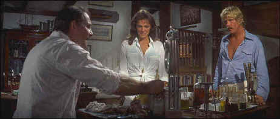

Columbia/1977/126m/ANA 2.35, PS 1.33
So there are these beautiful people diving in lush blue water, gracefully prodding the depths to find some exciting artifact of the ocean’s rage. David Sanders and Gail Berke are vacationing in Bermuda to explore their own relationship rather than the tropical waters, but when they find some interesting items in the wreck of a munitions ship, their focus shifts. Before they find local treasure hunting legend Romer Treece, they have an encounter with Henri Cloche, Bermuda’s drug king. Cloche tries to sweet-talk them out of a bottle they found on their dive, but Sanders is closed-mouthed. But Cloche is not a man to let a simple "no" stand in his way. The action underwater is complimented by a nifty fight up an elevator tower, so voodoo play, and a good explosion or two.
 |
Meet Romer Treece. ©Columbia |
The Deep is a movie ice cream sundae.
The stars are the main ingredients. The mesh effortlessly. Jacqueline Bisset has never
looked better on screen. The wet sequences are a great opportunity to show off the
actress’s natural attributes. Along with the young Nick Nolte, this is one beautiful
pair of people. Nolte’s intensity and enthusiasm is the chocolate syrup over the lush
scoops of Bisset ice cream. Robert Shaw provides the whipped cream and nuts on this
confection. Shaw’s sly style borrows heavily from his performance as Quint in Jaws.
Perhaps the similarities stem from the Benchley being the author of both books. Don’t
get me wrong, Shaw’s Treece is not up to the standard of Quint, but it’s a solid
role. Louis Gossett, Jr. is menacing enough to provide indigestion as Henri Cloche.
Credit Peter Yates as a guy who knows how to make a delicious ice
cream sundae. The veteran director whose credits include Bullitt and The Hot
Rock knows his way around action and knows how to keep it moving. The excellent chase
sequences along the narrow roads of Bermuda plays crisply and is not overdone. The ending
is a perfect surprise. Yates’ direct style holds together some of the slower segments
of The Deep.
Widescreen home theater owns are going to love The Deep on
DVD. Transferred in immaculate anamorphic images, The Deep looks as film-like as
anything I’ve seen on DVD. The seamless quality adds to the graceful flow of the
action. Nothing detracts the viewer from the lovely scenery or entertaining underwater
photography. The Dolby Digital 2-Channel Surround includes bubbling and gurgling sounds
underwater. John Barry typically fine score sounds very good on this DVD.